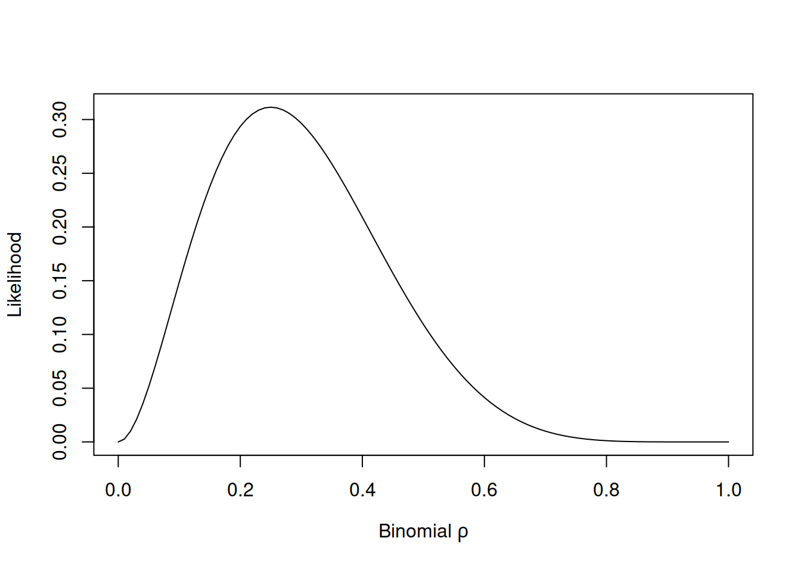

Likelihood vs Probability
Upon hearing the terms “probability” and “likelihood,” people will often tend to interpret them as synonymous. In statistics, however, the distinction between these two concepts is very important (and often misunderstood).
Probability refers to the chance of observing possible results if some certain state of the world were true1
Likelihood refers to hypotheses.
Setup
Let’s consider a coin toss. For a fair coin, the chance of getting a heads/tails for any given toss is 0.5.
We can simulate the number of “heads” in a single fair coin toss with the following code (because it is a single toss, it’s just going to return 0 or 1):
rbinom(n = 1, size = 1, prob = 0.5)## [1] 0We can simulate the number of “heads” in 8 fair coin tosses with the following code:
rbinom(n = 1, size = 8, prob = 0.5)## [1] 5As the coin is fair, what number of heads would we expect to see out of 8 coin tosses? Answer: 4! Doing another 8 tosses:
rbinom(n = 1, size = 8, prob = 0.5)## [1] 4and another 8:
rbinom(n = 1, size = 8, prob = 0.5)## [1] 4We see that they tend to be around our intuition expected number of 4 heads. We can change n = 1 to ask rbinom() to not just do 1 set of 8 coin tosses, but to do 1000 sets of 8 tosses:
table(rbinom(n = 1000, size = 8, prob = 0.5))##
## 0 1 2 3 4 5 6 7 8
## 5 39 110 237 270 204 109 24 2Probability
We can get to the probability of observing \(k\) heads in 8 tosses of a fair coin using dbinom().
Let’s calculate the probability of observing 2 heads in 8 tosses.
As coin tosses are independent, we can calculate probability using the product rule: \(P(AB) = P(A) \times P(B)\) where \(A\) and \(B\) are independent.
So the probability of observing 2 heads in 2 tosses is \(0.5 \times 0.5 = 0.25\):
dbinom(2, size=2, prob=0.5)## [1] 0.25What about the probability of 2 heads in 8 tosses?
In 8 tosses, those two heads could occur in various ways:
| Ways to get 2 heads in 8 tosses |
|---|
| TTHHTTTT |
| THTHTTTT |
| TTTHHTTT |
| HTTTHTTT |
| TTTTHTHT |
| THTTTHTT |
| THHTTTTT |
| … |
In fact there are 28 different ways this could happen:
dim(combn(8, 2))## [1] 2 28The probability of getting 2 heads in 8 tosses of a fair coin is, therefore:
\(28 \times (0.5 \times 0.5 \times 0.5 \times 0.5 \times 0.5 \times 0.5 \times 0.5 \times 0.5 \times 0.5)\).
Or, more succinctly:
\(28 \times 0.5^8\).
We can calculate this in R:
28 * (0.5^8)## [1] 0.109375Or, using dbinom()
dbinom(2, size = 8, prob = 0.5)## [1] 0.109375The important thing here is that when we are computing the probability, two things are fixed:
- the number of coin tosses (8)
- the value(s) that govern the coin’s behaviour (0.5 chance of landing on heads for any given toss)
We can then can compute the probabilities for observing various numbers of heads:
dbinom(0:8, 8, prob = 0.5)## [1] 0.00390625 0.03125000 0.10937500 0.21875000 0.27343750 0.21875000 0.10937500
## [8] 0.03125000 0.00390625 Note that the probability of observing 10 heads in 8 coin tosses is 0, as we would hope!
Note that the probability of observing 10 heads in 8 coin tosses is 0, as we would hope!
dbinom(10, 8, prob = 0.5)## [1] 0Likelihood
For likelihood, we are interested in hypotheses about our coin. Do we think it is a fair coin (for which the probability of heads is 0.5?).
To consider these hypotheses, we need to observe some data, and so we need to have a given number of tosses, and a given number of heads. Whereas above we varied the number of heads, and fixed the parameter that designates the true chance of landing on heads for any given toss, for the likelihood we fix the number of heads observed, and can make statements about different possible parameters that might govern the coins behaviour.
For example, if we did observe 2 heads in 8 tosses, what is the likelihood of this data given various parameters?
Our parameter can take any real number between from 0 to 1, but let’s do it for a selection:
poss_parameters = seq(from = 0, to = 1, by = 0.05)
dbinom(2, 8, poss_parameters)## [1] 0.000000e+00 5.145643e-02 1.488035e-01 2.376042e-01 2.936013e-01
## [6] 3.114624e-01 2.964755e-01 2.586868e-01 2.090189e-01 1.569492e-01
## [11] 1.093750e-01 7.033289e-02 4.128768e-02 2.174668e-02 1.000188e-02
## [16] 3.845215e-03 1.146880e-03 2.304323e-04 2.268000e-05 3.948437e-07
## [21] 0.000000e+00So what we are doing here is considering the possible parameters that govern our coin. Given that we observed 2 heads in 8 coin tosses, it seems very unlikely that the coin weighted such that it lands on heads 80% of the time (e.g., the parameter of 0.8 is not likely). You can visualise this as below:

A slightly more formal approach
Let \(d\) be our data (our observed outcome), and let \(\theta\) be the parameters that govern the data generating process.
When talking about “probability” we are talking about \(P(d | \theta)\) for a given value of \(\theta\).
In reality, we don’t actually know what \(\theta\) is, but we do observe some data \(d\). Given that we know that if we have a specific value for \(\theta\), then \(P(d | \theta)\) gives us the probability of observing \(d\), it follows that we would like to figure out what values of \(\theta\) maximise \(\mathcal{L}(\theta \vert d) = P(d \vert \theta)\), where \(\mathcal{L}(\theta \vert d)\) is the “likelihood function” of our unknown parameters \(\theta\), conditioned upon our observed data \(d\).
Why log-likelihood?
While the usefulness of considering likelihoods is hopefully quite clear, you will often find that statistical methods actually involve computing log-likelihoods.
The reason is actually a practical one.
In the example above, we were considering 2 heads in 8 coin tosses.
To calculate likelihood, we have to calculate the product of the likelihoods of each observation.
This is computationally quite difficult, but what we can do instead is calculate the sum of the log-likelihoods (because \(log(ab) = log(a) + log(b)\)).
This is the typical frequentist stats view. In Bayesian statistics, probability relates to the reasonable expectation (or “plausibility”) of a belief↩︎